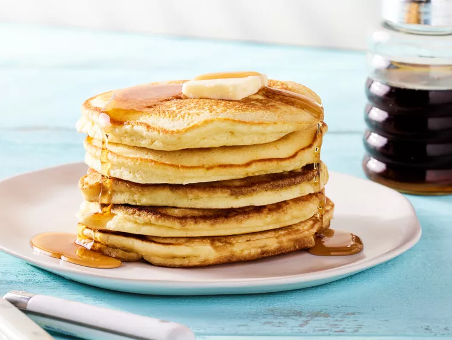

Pancakes
Home

Description
These pancakes are quick, easy, and turn out fluffy every time.
The recipe can be easily adjusted to your dietary needs, too. I have tried many recipes; this one is simple, yummy, and fail-proof!
A word of caution: they're very filling.
Ingrediants
- 2 cups all-purpose flour
- 3 tablespoons white sugar
- 2 teaspoons baking powder
- 1 teaspoon baking soda
- ½ teaspoon salt
- 2 cups milk
- 2 eggs
- ¼ cup canola oil
- cooking spray
Steps
- Gather all ingredients.
- Whisk together flour, sugar, baking powder, baking soda, and salt in a bowl until no lumps remain.
- Add milk, eggs, and oil; whisk until batter is runny and smooth.
- Heat a nonstick griddle over medium heat and lightly coat with cooking spray.
- Working in batches,
ladle a generous 1/4 cup batter for each pancake onto
the preheated grill and cook until bubbles appear, 3 to 4 minutes.
Flip and cook, pressing middle gently with the spatula,
until bottom is lightly browned, 2 to 3 minutes more.
Repeat with remaining batter
- Serve and enjoy!